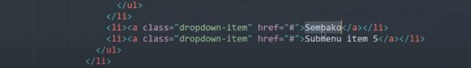
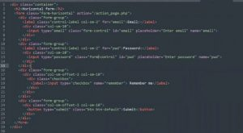
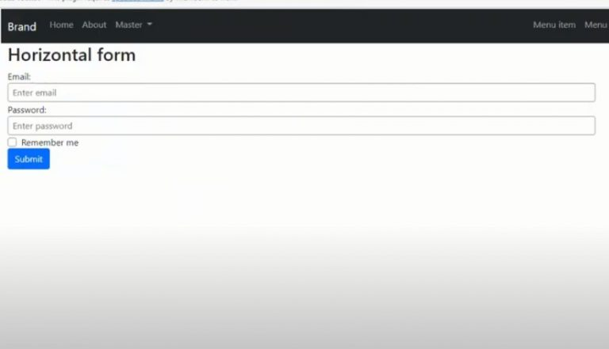
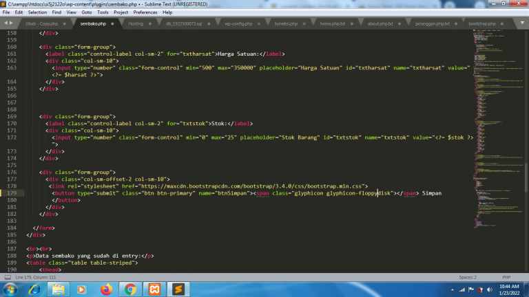
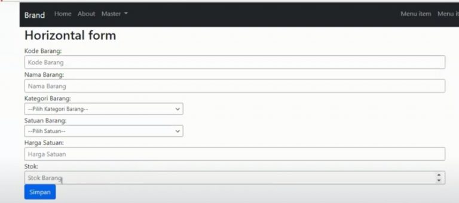
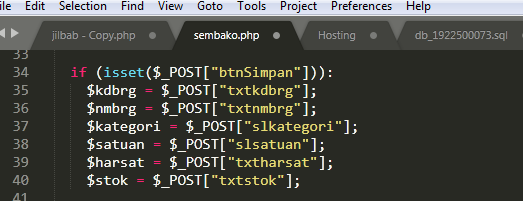
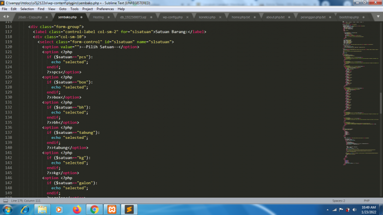
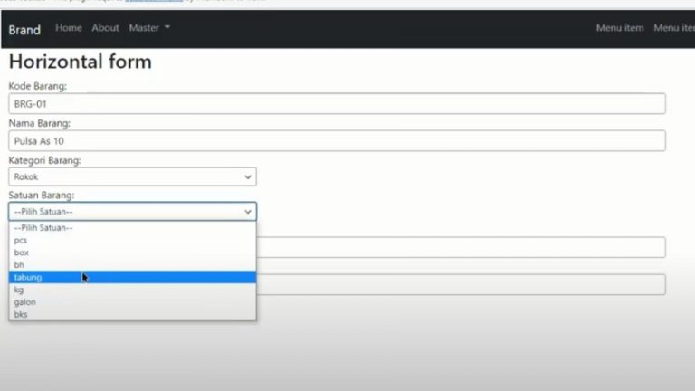

NIM: 1922500071
Nama: Tri Utami
Kelompok: SI5J
Hasil atau kesimpulan dari pertemuan 12 adalah:
- Pertama yang harus dilakukan membuka file bootstrap.php yang telah tersimpan pada pertemuan sebelumnya.
Lalu ubah nama dropdown yang ingin diubah menjadi nama submenu yang ingin anda gunakan
- Selanjutnya tambah href berikut ( href=”?page=linkutama&hal=sembako”>Sembako ) Lalu tambahkan dile php baru yang bernama ” Sembako.php ”
- Selanjutnya untuk menambahkan forms yang ingin digunakan cari terlebih dahulu bootstrap forms yang akan digunakan pada plugin yang akan kita buat.
Copy codingan forms tersebut lalu paste kan pada file sembakop.php
- Kemudian kita akan kembali masuk ke file sembako.php lalu edit baris form-group menjadi kelas yang akan kita gunakan. lalu setelah selesai diubah dan ditambahkan semua
- Selanjutnya tambahkan codingan untuk mendeklarasi kan variabel.
- Lalu kita membuat selected yang ada pada kategori agar dapat terpilih
gambar:







